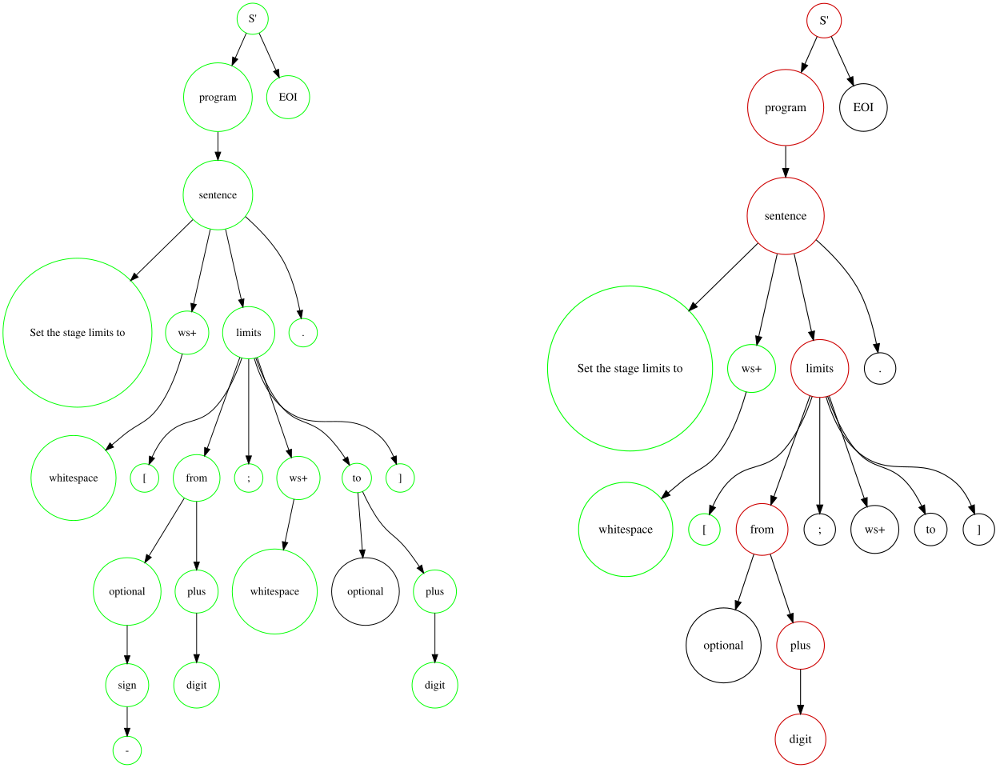

A key feature is the definition of custom types, which itself can be composed of built-in or custom types in turn, to build a type hierarchy. Custom types are defined like sentences, but using the parser's defineType() method:
Parser parser = new Parser();
parser.defineType("interval", "[{from:int}; {to:int}]", pn -> null, true);parser = Parser()
parser.defineType("interval", "[{from:int}; {to:int}]", lambda pn: None, True);let parser = new nlScript.Parser();
parser.defineType("interval", "[{from:int}; {to:int}]", pn => undefined, true);Its first argument is the name of the type ('interval'). Analogous to defineSentence(), the second argument is a parametrized string (here, two integral numbers with names 'from' and 'to', separated by a semicolon and enclosed by square brackets). The third and fourth argument are skipped here for simplicity. The expression defined above parses, e.g., '[-3; 3]'.
Custom types are used to define other custom types or to define sentences, e.g.:
parser.defineSentence("Set the stage limits to {limits:interval}.", ...);Types are typically built up of other types, so that a type hierarchy arises. This hierarchy is preserved after parsing and is reflected in the tree structure of the ParsedNode (pn) object provided to the Evaluator. For debugging purposes, the parsed tree can be visualized:
try {
ParsedNode pn = parser.parse("Set the stage limits to [-3; 3].", null);
System.out.println(GraphViz.toVizDotLink(pn));
} catch(ParseException e) {
System.out.println(GraphViz.toVizDotLink(e.getRoot()));
e.printStackTrace();
}
Here, the root node S' consists of the parsed program followed by EOI (end-of-input). A program consists of a number of sentences (here, a single one is parsed). The parsed sentence consists of the string 'Set the stage limits to', followed by one or more whitespace characters, followed by a variable named 'limits', followed by a fullstop etc.
Nodes are color-coded for their parsing state: If a node was parsed successfully, it is outlined green, if a parsing error occurred, it is outlined red. Nodes which encountered the end of the input during parsing are outlined orange. The right image above shows the parsed tree resulting from parsing
ParsedNode pn = parser.parse("Set the stage limits to [a; 3].", null);